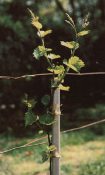
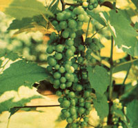
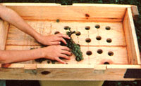
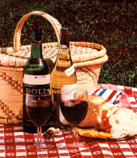
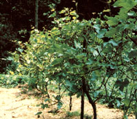
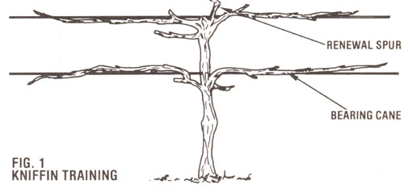
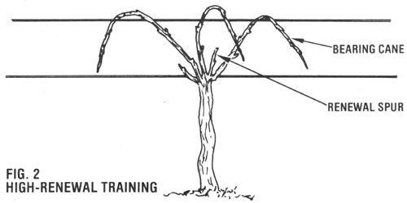
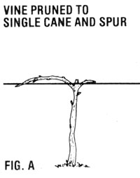
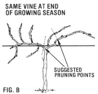
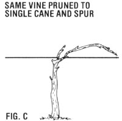

It's hard to beat the joy of sharing a bottle of beverage made from your own vineyard harvest.
A glass of crisp white wine-or perhaps of a hearty red-is the perfect accompaniment to good food and fellowship . . . and that drink can be all the more special if it's a product of your own labor. Yet, though many amateur vintners consistently make superior beverages, most folks still avoid "putting up" their own wine.
However, despite the fact that the winemaking process is indeed somewhat complex and results in occasional disappointments, it's not all that difficult-if you're ready to spend some winter days in preparation-to establish a small vineyard and turn its harvest into high-quality table wines. This article, then, is a practical, result-oriented introduction to the art of home viticulture and winemaking.
GRAPES: THE KEY INGREDIENT
All experienced vintners will agree on at least one point: Only a quality grape will produce a superior wine. It's simply not possible to make a prize-winning Bordeaux with the fruit of a common backyard vine. And, unfortunately, the classic European winemaking grape varieties (Vitis vinifera) are delicate in nature and will grow only in a few select areas of the country . . . primarily along the California coast.
Luckily, however, this problem's been solved . . . thanks to the introduction of a family of grapes called French hybrids into the United States. These unique vines are crosses between American and European varieties, and have inherited the good qualities of both strains: That is, they typically blend the hardiness and disease resistance of their local ancestors with the delicate traditional flavor of their overseas parents. A number of these hybrids are now widely available from local nurseries or through mail order suppliers. Here are six favorites . . . the first three suited for making red wine and the second trio appropriate for a "white" beverage.
Baco Noir: a disease-resistant, early ripening variety for short-season areas. The wine made from these grapes is generally similar to red Bordeaux.
Foch: an extra-early ripening type fit for cold northeastern climates. You'll find its wine is often akin to Burgundy.
Chelois: a vigorous producer that's best suited to regions with moderately long growing seasons.
Aurora: a hardy variety for locales with very short growing seasons. It is used to produce a pale, delicate white wine, and is a standard in New York's Finger Lakes region.
Seyval Blanc: a short-season variety. It typically results in a clean, brisk, superior wine.
Villard Blanc: a type suited for regions s with long growing seasons. You'll find it o both hardy and vigorous.
ESTABLISHING YOUR VINEYARD
Of course, before you actually buy any nursery stock, you'll have to decide how many plants you'll need . . . whether you want to produce red or white wine (or both) . . . and the specific types) of grape you prefer. To narrow down the search, you might well want to ask your extension agent-or perhaps a local vineyard owner-about the varieties of vines that are best suited to your particular region.
When preparing to put in your order, you should also keep in mind that-though individual yields do vary greatly-you can expect, within five years, an annual average of about eight pounds of fruit per vine from most hybrids . . . which is enough to make approximately six-tenths of a gallon of wine. A vineyard consisting of ten plants, then, will produce about six gallons of the beverage every year.
Next, go on to establish the vineyard's layout . . . choosing a sunny, well-drained site, preferably with a gentle slope. To determine space requirements, plan to place the vines six to ten feet apart in rows spaced at eight- to ten-foot intervals. Then prepare the area by working up the ground well and tilling under generous amounts of organic matter and fertilizer . . . you may want to have a soil test done to determine what is needed. (Don't add lime, though, because grapevines prefer acidic soil.)
When the plants arrive in the spring, remove them from the absorbent wrapping in which they were likely shipped and place their roots in a bucket of water so that they won't dry out. Your new vines will haw been grown from cuttings taken from a parent plant. [EDITOR'S NOTE: It's possible to produce your own stock from clippings . . . see "Grow Your Own Grapes", MOTHER NO. 61, page 76. (To order back issues, turn to page 48.) And Mr. Digwell, on page 181, has more vine advice.) Each immature grape bearer wilt consist of an original length of stalk with the roots at the lower end and some stubbier, branchlike growth at the upper tip. Place the plants, roots down (each along with a few handfuls of compost), into holes dug at properly spaced intervals. Then simply cover them with soil to the point where the top branches begin and prune off all but two or three bud eyes per cane. Finally, to support the coming season's growth, drive a four-foot stake into the ground next to each plant.
THE ART OF VITICULTURE
You'll find that managing your vineyard during the first season is a fairly trouble-free and enjoyable task. In fact, your sole aim for this year will be to make sure that the plants develop the strong, upright, wellshaped trunks that will support the vines for the rest of their lives.
As the weather warms, each bud eye left on during the planting process will burst open and produce a bright green shoot. Select the most vigorous cane among these, and rub off all the others. The remaining branch will mature to form the vine's permanent trunk. Later in the season, as the plant grows, carefully tie it (not too tightly!) to the stake at six- to eight-inch intervals to keep it straight. You should also eliminate all competition by removing any new unwanted shoots as they appear. And, with the exception of normal garden maintenance, that's all there is to caring for your grapes during their first year.
When the following spring arrives, you can begin the vineyard's second season by building a trellis. This structure might simply consist of two or three horizontal wires (use No. 10 galvanized) strung on posts placed 15 to 20 feet apart. Fasten the lowest to each upright line at a point 2-1/2 to 3 feet above the ground, and the highest about 5 feet. Then, to strengthen the fence, brace the end supports with guy wires.
Now, cut back each vine so that the trunk extends slightly above the bottom wire. And, once the new growth shows and all danger of frost has passed, rub off all shoots except for the top four. These small branches will later develop into the large canes that will form the plant's foliage and eventually bear the fruit.
As spring progresses, cultivate the soil occasionally to keep weeds in check, orif enough organic material is availablemulch the entire plot. (The latter approach is more desirable, since it both feeds the soil and virtually eliminates further chores until harvest time.)
PRUNING AND TRAINING
The key to successfully managing your vineyard during subsequent years is to simply understand-and apply-the principles of pruning and training. Pruning, as you likely know, is the act of cutting away some of the vine during the dormant season in order to regulate its growth, and-as a result-improve the quality of the crop. Training, on the other hand, is the process of arranging the bearing canes on the trunk that gives the vine its permanent shape and form.
Many folks find grape-pruning practices confusing at first, but the theory behind them is straightforward. Put simply, each season's new growth springs from the bud eyes on the one-year-old wood. Pruning is just removing all but a select portion of this growth. Your aim is to leave only enough to bear the crop and to grow renewal wood for the next year.
If pruning is the tactic that keeps a vine's size in check, then training is a long-term strategy involving the placement of the canes and spurs ... and the fashion in which they're arranged on the trellis. Two commonly used techniques are the four-arm Kniffin and the High-Renewal systems (Figs. 1 and 2). These methods differ with regard to form, but are functionally about the same. The Kniffin is the most popular training system in the East, and the HighRenewal method, which is used widely in Europe for the French hybrids, is less formally structured and somewhat easier to implement. (See the illustrations and the sidebar for more information.)
A TRIP THROUGH THE SEASON
Let's say that it's the beginning of your young vineyard's third season. You've finished pruning, and-after a long stretch of warm April weather-the buds on the bearing canes swell, parting the hard scales that protect each fruit eye. Soon the puffy nodes burst, sprouting tiny velvet shoots with brilliant carmine and green leaves. These small branch tips grow with astonishing vigor, unfolding leaves and clinging tendrils as they snake along the trellis, and quickly reach lengths of four feet to six feet. Several weeks later tiny flower clusters, called "inflorescences", appear. Then-soon after pollination-the blossom caps fall, the ovaries ripen, and the vintage is born.
As the season progresses, the foliage thickens, and the bunches of green fruit grow plump ... until their combined weight strains the trellis support. Later, however, growth slows noticeably . . . the wood on the canes begins to harden . . . and the berries begin to show a faint blush of color.
Near the end of the summer, the grapes turn ripe and soft, decorating the vineyard with splashes of red, blue, purple, and translucent-white fruit.
At this point important natural processes occur-inside the pulp-that will affect the quality of your wine. As the grapes ripen, you see, they increase in sugar content (which will give the beverage both alcohol content and body) and simultaneously decrease in acid content (which influences the tartness of the wine).
Harvest time, then, is a period of great anguish for all vineyard keepers. Pick too soon and you risk making sour, puckery wine. Wait too long and you take a chance of losing your now fragile crops to birds, insects, or frost. No firm guidance can be given as to when to gather the yield, either . . . as a master vintner that decision is up to you.
WINEMAKING: LEARN THE BASICS
Turning grapes into wine is a complex, natural biological and chemical process. Simply stated, the sugar in the fruit juice (the "must") is transformed-through a series of stages-by the action of yeast into almost equal parts of alcohol and carbon dioxide. Grapes with a 20% sugar content, then, will result in a 20-proof (10% alcohol) wine. In addition, the vinous beverage will contain small amounts of complex acids, tannins, and other trace ingredients that impart aroma and flavor.
Despite the complexity of the chain of events that produces fine vintages, though, your role as winemaker is really quite straightforward. The most important factor in guaranteeing consistent success is to fully understand two basic principles and to apply them faithfully: Keep your equipment and work area clean and orderly at all times, and provide the physical and environmental conditions required to insure the success of the natural winemaking process. These rules will be discussed in some detail, and their importance cannot be overstated.
As a beginning enologist (or winemaker), you'll of course have to round up the necessary equipment. Economy and resourcefulness are the bywords here. There's really little need to buy high-priced gadgets or beginners' kits. Scrounge, build, or borrow instead. Here's a list of the basic tools and ingredients.
Fermentor: Use a food-grade, high-quality plastic bucket or a new trash container.
Hydrometer: This implement is used to measure potential alcohol content and is an inexpensive, but crucial, tool. You can find one at a home-winemaking supply house.
Aging containers: Use one- to five-gallon glass jugs.
Winemaking yeast: This is good success insurance, as it guarantees a quick, clean fermentation with none of the aftertaste often produced by baker's yeast.
Crusher: You can, perhaps, borrow one . . . or make your own from scrap lumber by building an opened-topped box and then drilling oneinch holes, on three-inch centers, in its bottom. Crush the grapes by rubbing the bunches against the board. In this manner, the pulp falls through the holes into the fermentor, while most of the stems will stay on top to be thrown out.
Press: This is a costly, but necessary, item. Try to borrow one . . . but if none is available, make your own. The device can be as simple as two boards hinged together at one end and used, like a nutcracker, to squeeze the juice out of pulp contained in a nylon bag.
CREATE A HEARTY RED WINE
The process for making red wine begins on harvest day. First, scrub your equipment with washing soda and water. Then, pick the grape clusters and bring them, without delay, to the wine cellar to be crushed.
Crushing is a brief and messy, but cheerful, affair. The idea is to simply pop each grape open so the yeast can work on the exposed pulp. And this is the one time in the entire winemaking process when you can be a bit sloppy, since a few unbroken grapes-or even stems and leaves-dropped into the fermentor will make little difference. However, once you've finished, do be sure to scrub, rinse, and dry the equipment again. Remember, uncleanliness nurtures bacteria that can ruin a batch of wine.
Next, adjust the sugar content of the must to insure that you'll produce a beverage with an alcohol content of 10% to 12%. This will give the beverage stability and the proper tang. Sugar concentration is read with the hydrometer, which works by measuring specific gravity. Merely float the device in a sample of juice and read the thermometerlike scale. If necessary, stir sugar into the must until the instrument reads 12% alcohol by volume . . . or shows a specific gravity of about 1.088.
Having established the proper conditions, add one packet of dried concentrated winemaker's yeast for each five gallons of must, and cover the container to keep out foreign matter and fruit flies.
Fermentation should begin within 24 hours. First, a bubble or two will appear . . . then more. In a short time, the surface will be covered with a layer of foam. Soon the entire mixture will be fermenting with vigor. The concoction will release a pungent odor when the cover is lifted. The skins and pulp will rise to the surface and form a cakelike mess called the chapeau. Stir this back into the juice several times daily.
The violent fermentation usually subsides within four to six days. Once it does slow down, separate the juice from the seeds, skins, and pulp by pressing the must. To do this, simply bail the entire contents of the fermentor into the press basket. At first, the new wine will flow into your waiting glass jugs on its own. The last of the liquid, however, must be squashed out of the soggy fruit. Apply pressure gradually and continue in this manner until the pulp is dry. The leftover mass, called "pomace", can be returned to the vineyard soil as fertilizer.
Now, clean your equipment and make sure all containers of wine are filled to the neck. From this point on, you must not expose your beverage to outside air, which could cause it to spoil. Cap each jug with an air lock (this can be as simple as a plastic baggie and a rubber band). Then, after all signs of fermentation have ended, stopper the containers and store them in a cool, safe place.
WHIP UP A WONDERFUL WHITE
With the exception of one crucial step, the process for making white wine is similar to that for preparing red. The primary difference is that you must crush and press the grapes immediately after they're picked. In other words, conduct the operation in this order: harvest, crush, then press, adjust for sugar content, and ferment. When the wine becomes still, you can store it-in filled, tightly stopped glass jugs-along with its red cousin.
THE SECONDARY FERMENTATION
Whatever its color, you should let your young beverage rest undisturbed until late December. After this period, it will have cleared considerably . . . and, as a result of a phenomenon called secondary (or malolactic) fermentation, its acid content will have diminished. Now's the time to purify your creation, removing the sediment (called the "lees") by way of a procedure known as "racking".
This step is accomplished by carefully siphoning the liquid off the lees into another clean container, using a short length of clean plastic tubing or flexible hose. As the siphon slowly empties the jugs, keep lowering the tubing until it just begins to draw off the deposit at the bottom and then halt the flow. (Make sure the new jugs are filled to the neck and stoppered tightly.)
Of course, feasting and merriment are appropriate to celebrate a purification rite such as racking, so be prepared by setting aside a sampler of the new vintage. Then invite family and friends to a hearty meal, highlighted by a taste of the new homemade brew. Your wine should have a mild, fruit bouquet at this stage, but may taste slightly "green". Don't worry, though, because the beverage has yet to go through its timeconsuming finishing stage ... and sonic good things just can't be hurried.
FINISHING THE WINE
The last step in the winemaking process requires only patient waiting. Let the bottles lie undisturbed until about February, then rack them again. Later, before hot weather comes, siphon the wine off any accumulated sediment a third time and then bottle it permanently . . . either in screwcapped gallon jugs or in corked bottles.
Finally, at the end of the first summer after bottling, your wine will be ready to drink. Don't plan on aging it more than two years, because homemade beverage is best consumed young. And if you've followed these guidelines, you should find your labors rewarded by a superior dry table wine that'll hold its own against commercial products sold at many times the price . . . and, best of all, you'll have earned the right to label your vintage "Estate Bottled"!
EDITOR'S NOTE: For all of its length, this article provides only a brief introduction to the art of home viticulture and winemaking. You might want to read over some of the dozens of good books about both subjects that are on the market. (A Wine-Grower's Guide by Philip M. Wagner-Alfred Knopf, $10.95-is art easy-to-follow, practical reference book.)
PRUNING TECHNIQUES
Although a dormant grapevine might look like a confusing tangle of woody canes, pruning it won't be a difficult task if you know what to look for. The wood to be removed (last year's growth) will be smooth and light brown, with many new buds. By contrast, the older wood (the trunk and other semipermanent parts) will be thick and dark, and its bark will hang in shaggy strips.
The accompanying illustrations, even though greatly simplified, show which canes should be cut away during pruning. Fig. A depicts a newly pruned vine with a single cane and spur. The long branch (the bearing cane) will produce the coming year's crop. And in the following spring, it and all of its secondary growth will be removed. The short branch (called the renewal spur) will provide the growth that will produce that season's new cane-and-spur combination.
Fig. B shows the some plant at the end of the season with dormant canes extending from each original bud eye. To prune your vine, eliminate the bearing cane that bore last year's crop, and use the two canes that grew from the buds on last year's renewal spur to farm this year's cane-and-spur combination.
To accomplish this, simply refer to the dotted lines shown in Fig. B, forming the bearing cane by cutting one branch back to between six and ten bud eyes . . . then farm the spur by cutting the other branch back to two buds as in Fig. C.
Most vigorous plants will support four cane-and-spur combinations. Use these same guidelines when you prune the entire vine. just be sure to carefully select the location of your cuts to maintain the plant's shape and intended training form.
|
 |
 |
 |
|
 |
 |
 |
|
 |
 |
 |
|
 |
|
|